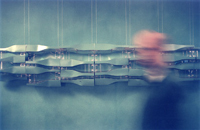

[dorkbot.org] > [dorkbot-sthlm]
home ::: about ::: archives ::: newsletters ::: links ::: contact
DORKBOT #1
april 6, 2005
| KRETS: PARCEL | |
KRETS: "KRETS is an architecture and design research group that focuses on the material and technological/the social and the cultural aspects of design, production and performance. The group uses a collaborative platform to explore the ambiguities of production and performance where the nature of design as well as practice itself is reconfigured. Krets is based in Stockholm, Sweden, with affiliation to AKAD; the academy for practice-based research in architecture and design supported by the national research council in Sweden. Krets also has conceptual support from Servo, includning frequent collaboration." Krets will present on-going project PARCEL, which suggests new ways of establishing relations between the material, audiovisual and digital techniques that are increasingly forming the environments around us. The project considers off-the-shelf technologies normally used in the packaging industry and consumer electronics as integral parts of an architectural design.
|
 |
| Antoine Fressancourt about php | |
| Antoine Fressancourt presents his work on p2p: "Mobile
devices now have enhanced capabilities that allow them to have more functionalities.
They are able to record, read and send multimedia files (e.g. photos,
films, audio files), to take part in multimedia conferences involving
voice and video or to run multiplayer games. However there is no up-and-running equivalent at the moment to fully decentralized peer-to-peer systems. The aim of the JXME project, an open source effort to develop a mobile P2P plateform, is to fill this blank and to provide people with the tools to interact with one another without being dependant on their technology provider. In this speech I am going to introduce you to the basics of the JXME project and then I will focus on the applications of a mobile peer-to-peer framework and the use people may make of it." |
all materials on this website copyright 2005-2006 majken kramer overgaard and eugen krasiuk and the individual artists/presenters